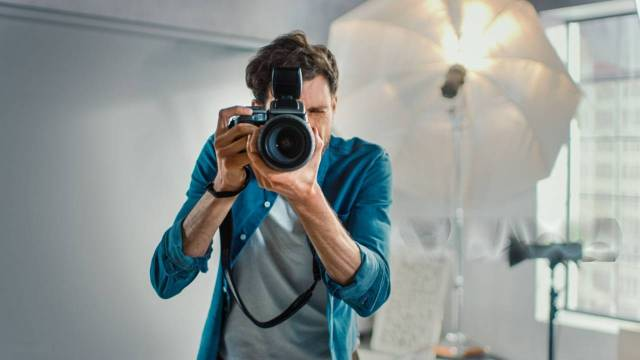

Отзывы клиентов
Работали над фотосъёмкой нашей новой коллекции. Профессионализм и внимание к деталям поразили! Каждый кадр точно передаёт философию нашего бренда. Фотографии не просто красивые — они продающие.
Анна Иванова, бренд-менеджер, «DecorHome», Москва
Заказывали корпоративную серию для команды и портреты для сайта. Смог создать раскованную атмосферу, даже самые стеснительные сотрудники выглядели естественно и уверенно. Отличный результат!
Сергей Петров, основатель IT-студии «DevCore», Санкт-Петербург
